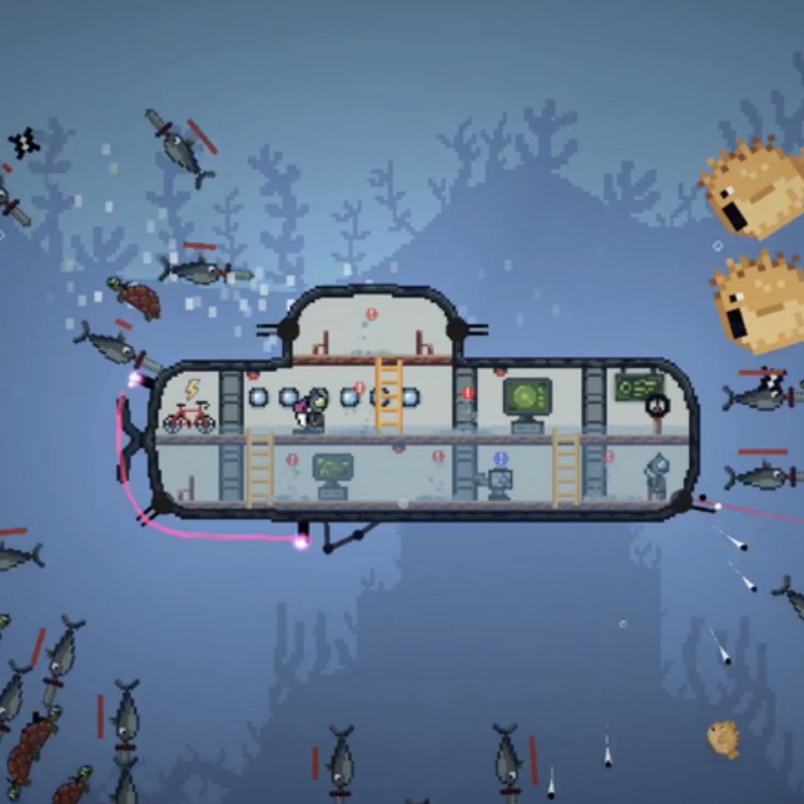

I am a PhD candidate in the AI
Lab at the University of Michigan advised by Prof. Stella Yu.
I also earned my BSE (2020-2023) and MSE (2023-2024) at the University of Michigan.
Previously, I interned at the NASA Jet Propulsion
Laboratory where I worked on the surface simulation software for the Mars 2020
mission,
Mars Sample
Return mission, and the soon-to-be-launched CADRE tech demo.
MorphEUS is a compact, morphable co-axial quadrotor that enables efficient,
resilient omnidirectional flight with independent position and orientation control,
making it ideal for close-range inspection and manipulation tasks.
Our team presents various diffusion-based underwater image restoration methods that are used to dehaze and color-correct underwater images such that they are conducive to above-water SLAM and scene
reconstruction pipelines.
Our group extends upon previous work by adapting an existing Unseen Object
Instance Segmentation (UOIS) model so that it can perform segmentation on
RGB-only images.
Game Development

Sub-merged Conflicts
Christian Foreman, Drew Scheffer, Adam Scovera, Manish Venumuddula
Collaborative 7-week game design project where you and a friend are underwater
explorers on a mission to find the treasure, navigate through treacherous
currents, encounter dangerous creatures, and use your teamwork skills to keep
your submarine safe and strike gold!
{kind=link}